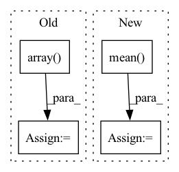

Pattern ID :25229

Before Change
start, end = source_data["start"], source_data["end"]
wav_path = os.path.join(self.wav_root, source_data["path"])
wave, sr = sf.read(wav_path)
wave = np.array(wave)[start: end]
wave = wave[None]
mixture = mixture + wave
if sources is None:
sources = wave
else:
sources = np.concatenate([sources, wave], axis=0)
segment_IDs.append("{}_{}-{}".format(source_data["utterance-ID"], start, end))
mixture = torch.Tensor(mixture).float()
sources = torch.Tensor(sources).float()
return mixture, sources, segment_IDs
After Change
for _source in __sources__:
source, sr = sf.read(sources_data[_source]["path"])
source = source[start_idx: end_idx].mean(axis=1)
print(source.shape)
sources.append(sources)
return mixture, sources
In pattern: SUPERPATTERN
Frequency: 3
Non-data size: 4
Instances
Fragment ID: 77143321
Project Name: tky823/dnn-based_source_separation
Commit Name: 550c9be6c6db5a89b57716fc49f1c95f913c05ad
Time: 2020-12-29
Author: 40362510+tky823@users.noreply.github.com
File Name: egs/dsd100/common/src/dataset.py
M Class Name: WaveDataset
N Class Name: WaveDataset
M Method Name: __getitem__(2)
N Method Name: __getitem__(2)
M Parent Class: DSD100Dataset
N Parent Class: DSD100Dataset
M File Name: egs/dsd100/common/src/dataset.py
N File Name: egs/dsd100/common/src/dataset.py
M Start Line: 50
M End Line: 74
N Start Line: 33
N End Line: 50
'>
Before Change
export_path_list = []
cs = np.vstack(
[
np.ones((2, 3)),
np.array([0.31, 0.51, 0.74]),
np.array([0.75, 0.31, 0.30]),
np.array([0.36, 0.90, 0.38]),
np.array([0.50, 0.39, 0.64]),
np.array([1, 0.6, 0]),
]
)
After Change
if ps_.ndim > 1:
ps_mean = np.zeros((ps_.shape[0],))
for ind, ps_threshold in enumerate(ps_):
ps_mean[ind] = ps_threshold[ps_threshold > -1].mean()
ps_curve.append(ps_mean)
else:
ps_curve.append(ps_)
ps_curve.insert(0, np.zeros(ps_curve[0].shape))
'>
Fragment ID: 77143323
Project Name: obss/sahi
Commit Name: c358cc200a67ed985790bc19deccec5fe1c4e75d
Time: 2022-01-08
Author: 34196005+fcakyon@users.noreply.github.com
File Name: sahi/scripts/coco_error_analysis.py
M Class Name: AnonimousClass
N Class Name: AnonimousClass
M Method Name: _makeplot(5)
N Method Name: _makeplot(5)
M Parent Class:
N Parent Class:
M File Name: sahi/scripts/coco_error_analysis.py
N File Name: sahi/scripts/coco_error_analysis.py
M Start Line: 16
M End Line: 32
N Start Line: 31
N End Line: 43
'>
Before Change
cc = np.sort(cc, axis=0)
centers += [cc]
centers = np.array(centers)
mean = centers.mean(axis=2)
std = centers.std(axis=2)
return mean, std
After Change
labels = kmeans.labels_
lab0 = meter[labels == 0]
lab1 = meter[labels == 1]
mean += [[lab0.mean(), lab1.mean()]]
std += [[lab0.std(), lab1.std()]]
'>
Fragment ID: 77143315
Project Name: uca-datalab/nilm-thresholding
Commit Name: 2b24d37855791e9ca50d60b2d7a9443f09a1cc70
Time: 2020-05-12
Author: danipg1409@gmail.com
File Name: better_nilm/model/preprocessing.py
M Class Name: AnonimousClass
N Class Name: AnonimousClass
M Method Name: _get_cluster_centroids(1)
N Method Name: _get_cluster_centroids(1)
M Parent Class:
N Parent Class:
M File Name: better_nilm/model/preprocessing.py
N File Name: better_nilm/model/preprocessing.py
M Start Line: 212
M End Line: 229
N Start Line: 212
N End Line: 228